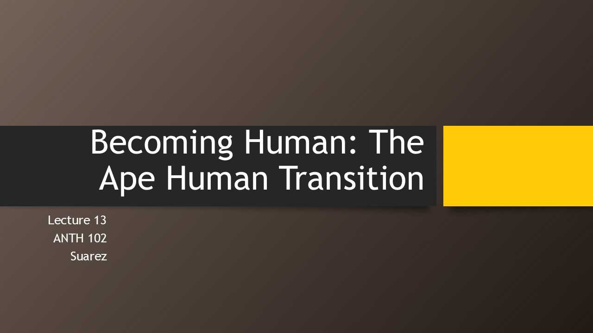
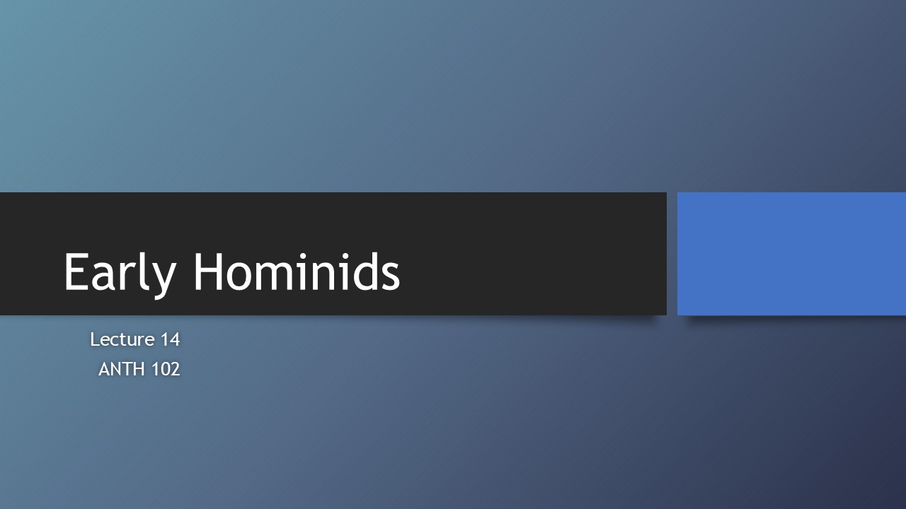
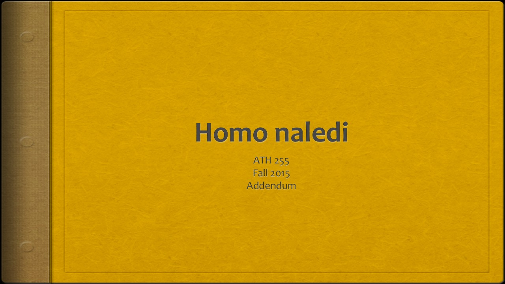
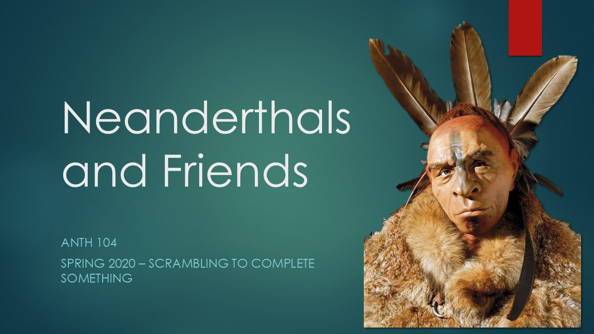
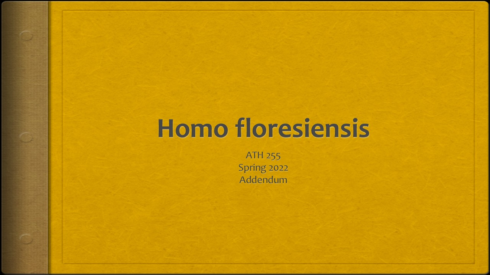
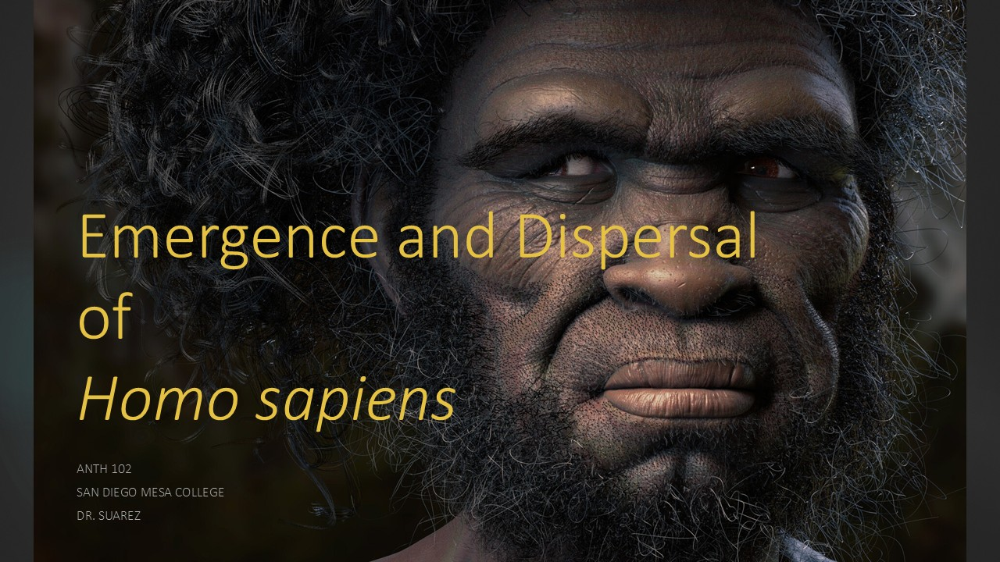

Biological Anthropology 102
“What if the great apes had asked whether they should evolve into Homo sapiens—pros and cons—and they had listed, on the pro side, ‘Oh, we could have a lot of bananas if we became human’? Well, we can have unlimited bananas now, but there is more to the human condition than that.”
Nick Bostrom, quoted in “The Doomsday Invention,” The New Yorker
Foundations

Genetics & Evolution
Human Variation & Forensics

Primates & Paleoanthropology

Human Origins

L13 Becoming Human
L14 Early Hominids L15.1 Rise of the Genus Homo
L15.2 Homo naledi addendum
L16.1 Neanderthals L16.2 Homo naledi addendum
L16.3 Homo floresiensis addendum
L17 Emergence and Dispersal of Homo Sapiens